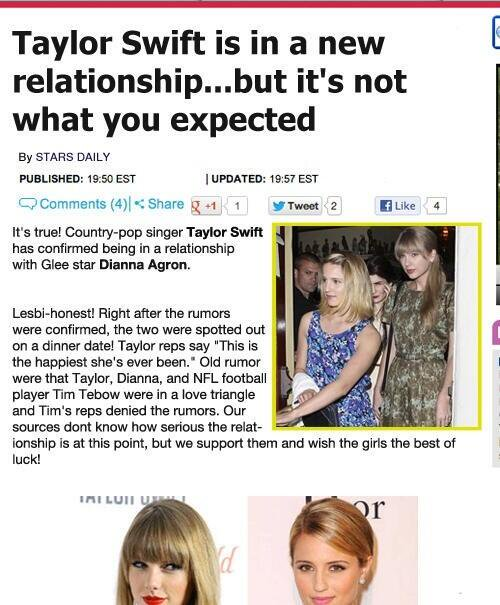

3. Mirror and Mask
在解开TS、DA、Tim Tebow、Conor Kennedy的悬念前，要先说一首歌，这首歌不引人注目，但它为TS在2012年所做的一切定下了基调，这首歌是TS写给自己的，就是RED中的第13首—— The Lucky One。
在RED track by track中（8分59秒开始）她说这首歌写于澳大利亚，也就是2012年3月澳洲巡演期间（2月29号-3月14号）
It kind of talks about some of my fears, through telling the story of other people that I was inspired by.
它通过讲那些使我受到启发的人物故事，讲述了我的一些恐惧
But you know, more than their stories being told, I'm pretty much singing about what I'm scared of in that song.
但你知道，比起说她们的故事，我更多的是把我的恐惧唱出来
Ending up kind of caught up in this whole thing and lonely and feeling misunderstood.
最后我被整个事情所纠缠，感觉孤独、被误解（歌词中还有被利用）
And feeling like, when people think you're lucky that you're really not
感觉像是，别人觉得你是幸运儿，其实你并不是
So it kinda expresses my greatest fear of having this not end up be fun anymore. Having it end up being a scary place.
所以它表达出我最大的恐惧就是，害怕事情发展到最后变得不再有趣，最后发展到令人恐惧的地步
It's a story song and it's something I'm really proud of, because it kind of goes to a place that I'm terrified of.
所以这是一首有故事的歌，我为这首歌感到骄傲，因为它写出了我心中的恐惧
这首歌受谁启发，有说Joni Mitchell, Shirley MacLaine, Marilyn Monroe，Shania Twain的，没准还有Britney Spears，BS的Lucky和这首The Lucky One语境很像，而且TS在Speak Now巡演中还翻唱了BS的Lucky。
这首歌参考了谁的什么经历并不重要，重要的是TS一次次强调的，通过这些故事表达出的她的恐惧是什么？
整篇歌词反映出的是她所在的名利场，别人说她lucky和pretty，她只觉得confused和used。闪光灯下优雅的"forcing laughter, faking smiles"，指望她当摇钱树的利益集团，想挖她大新闻的各路媒体，等着取代她的后起之秀。她可以带着她的尊严和家产头也不回的逃离这是非之地，找个好地段买个豪宅去过安逸的退休生活，但现在还不是时候，她还要继续往前走（六张专辑一张精选的合约没完成前哪都别想去）。名利是把双刃剑，它给你期望的，也夺走了你珍视的。
（关于The Lucky One，我写过另一篇一文Taylor Swift与Lucky与Fearless，可作参考）
其中有一段歌词
Now it's big black cars, and Riviera views
And your lover in the foyer doesn't even know you
And your secrets end up splashed on the news front page
doesn't even know you的意思：没有认出你，或者，根本不认识/了解你
为什么这个lover doesn't even know you呢？
可能一：你素颜和化妆差别太大，画着大浓妆出现lover压根认不出来。明显不可能，划掉；
可能二：这个站在门厅等你的lover根本就和你不熟，不了解你；
这个lover并不是她真的lover，这是一个public relationship，名义上是lover，实际两人相互之间既不了解也不关心。
后面还有一句，your secrets end up splashed on the news front page，你的秘密铺天盖地的登上了头版头条，比如这样的？
这是TS害怕并想避免的，所以她需要一个面具，一个doesn't even know her的"lover"。
时间拨回到2012年初。
2012年1月17号，TS登上封面的Vogue2月刊出刊，DA发推恭喜她
同一天，可能因为TS在Vogue中提到了KK，说想和她一起烤饼干，KK就在推特上问TS“是去你家还是我家烤？”
也许是KK身边还有Toni，只是出于礼貌问了TS一句并未太当真，也许是DA已经在TS身边了，总之KK这句邀请在当时并未得到回应。
因为和Zac Efron共同配音动画片The Lorax（老雷斯的故事），1、2月传TS和Zac的绯闻很凶，两个当事人全都一直在否认，Gossip Cop接连出了好几则辟谣，1月26号辟谣，2月20号辟谣，2月21号TS和Zac一起上Ellen Show（这一期挺经典的可以看看），Ellen虽然一直在调侃他们，但目的还是帮他们辟谣。TS有句话说得很精辟：“我一直以为只有面对面的在一起拍电影才会传绯闻，没想到我们分别在东西海岸给动画片配音也能传”。让我们想想，2009年TS和小狼拍< 情人节 >传绯闻了，2013年拍< The Giver >又和剧中的Brenton Thwaites还有Alexander Skarsgard传，嗯，你们懂的，电影宣传固定套路，动画片也不例外。
{kind=link}
{kind=link}
在Ellen Show上TS被问到情人节干什么了，她说和她的单身姐妹们一起开了一个"Pathetic Single Girls可悲的单身妹"主题party，每个人做了个卡片，讲述自己为何单身，让我想起了这句"We show off our different scarlet letters"。
{kind=link}
当天Ashley、Claire都在，那DA去哪了？DA跑去和“前男友”Sebastian Stan在街上秀恩爱，还被狗仔360度拍到照片（看起来像kiss的其实是角度问题）。明明在11年底已经和“前男友”分手了，情人节突然又冒出来秀恩爱，3月份Sebastian就和另一个女人手牵手了，能再假一点吗。
还记得前面说过，最晚2月，可能在1月（DA赞TS的Vogue），TS和DA已经是BFF了，也许还超过了BFF，对照TS和Mayer、DA、KK这3段初期藏起来的关系，她可能是想等一段关系稳定后再慢慢曝光出来（DA和KK当然只曝光友情部分），Mayer那段没有被曝光也许是没进入稳定期就结束了。
明星间的友情、爱情曝光一定要有说给观众听的“契机”，比如他/她们是在哪个颁奖礼/聚会/活动上认识的。TS和KK可以说是13年11月的VS，那TS和DA呢，11年9月逛旧货市场的时候碰到的？认识这么久都未见2人有公开交集突然就成了亲密好友，这情节太可疑。
2012年2月24号，WME（经纪公司巨头）搞了一个pre Oscar party，很多明星都有出席，包括TS、DA、还有新签约WME的炙手可热的橄榄球新秀Tim Tebow。
接着就有媒体说Tim Tebow在会场上分别和TS、和DA有聊天，在别的稿子里DA和Tim聊天的时间具体到了10分钟。各位看官，以后但凡当事人尚未有进一步接触尚未有合影流出时，就有报道说谁和谁在什么场合愉快的聊天了几分钟疑似看对眼的，无一例外，全是公关稿。比如12年4月KCA之后有报道称TS觉得HS很hot，HS对TS印象深刻，比如3年后的某一天，有报道说TS和谁谁在全英的after party上愉快的聊了8分钟…… 嘘，打住。
{kind=link}
另外，TS、DA、Tim Tebow不仅是同一个经纪公司，他们的经纪人也是同一人，Thor Bradwell。2月24的WME party，Thor就是主持人，由他安排三人在公开场合见面聊天再发个稿子不要太方便哦。而且，Thor Bradwell负责的不止他们三个，还包括Taylor Lautner和Alex Pettyfer，一个是TS的“前男友”，一个是DA的“前男友”，这两对在一起的原因都是共同出演了电影，嗯哼。
2月27号，TS和Tim Tebow在另外两个貌似公司工作人员的陪同下在Toscanova Italian Restaurant吃饭，吃完TS就直接去机场飞澳洲了，接着报道TS和Tim Tebow在date的消息就出来了，报道1，报道2，报道3。
TS在澳洲写下了The Lucky One。Feeling lonely and misunderstood, feeling confused and used。
doesn't even know you的"lover"已经出现，Tim Tebow只是（2012年的）第一个。
“我为这首歌感到骄傲，因为它写出了我心中的恐惧”
3月19号，TS结束澳洲巡演回到LA。
3月21号，媒体开始写DA和Tim Tebow和Sebastian Stan的三角恋，TS和DA和Tim Tebow的三角关系搭建完成。
3月21号，F4在TS家玩dress-up，TS和DA第一次有了公开记录（还没露脸）。3月22号，TS依次在推特上关注了Tim Tebow、Claire和DA。
3月25号，TS和DA两个人去看饥饿游戏。
3月26号，TS和DA和Tim Tebow的三角绯闻继续增强。
DA在WME上和Tim“聊天了10分钟”，TS在WME上也“和Tim聊天”，还在飞澳洲前一起吃过饭，然后Tim Tebow再没出现过。他成功的完成了将TS和DA联系起来的历史使命，从某种意义上说，TS和DA能公开“成为BFF”的确是“因为Tim Tebow”。
接下来，正常的节奏是她们可以公开在一起活动，一起吃饭、聚会、party，就像2014年TS身边的KK，和BFF成天在一起玩天经地义，几个月、一年、两年，慢慢的所有人都会习惯TS身边有这样一个BFF。
但是Swiftgron的传闻来的太快了，太早了，她们还没构建一个牢固的BFF形象就有人怀疑她们是一对couple。
退一步说，即使她们真的只是朋友，只要有同性传闻出现，她们身后的团队就要想办法去化解，化解方式无非就是：避嫌+男朋友。
5月15号，TS和Ed写了Everything Has Changed，当晚TS和DA穿着情侣装第一次被狗仔拍到，从这天起，一直到7月份，TS和DA再没有任何公开在一起的记录。
5月17号，TS和Mark Foster一起吃中饭，传了一阵子绯闻，看看Perez Hilton的报道，不管他现在怎么捧TS，记住他当时是怎么说她的。
5月30号，DA去看演出，牵着“新男友”Henry Joost的手一起离开。
I CAN HEAR THEM WHISPER AS WE PASS BY
IT'S A BAD SIGN, BAD SIGN